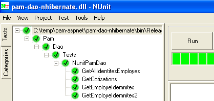

7. Die Anwendung [SimuPaie] – „ “ Version 3 – 3-Tier-Architektur mit NHibernate
Empfohlene Lektüre: „C# 2008, Kapitel 4: 3-Tier-Architekturen, NUnit-Tests, Spring-Framework“.
7.1. Allgemeine Anwendungsarchitektur
Die [SimuPaie]-Anwendung wird nun die folgende dreischichtige Struktur aufweisen:
 |
- Die [1-dao]-Schicht (dao = Data Access Object) übernimmt den Datenzugriff.
- Die [2-business]-Schicht übernimmt die Geschäftslogik der Anwendung, insbesondere die Lohn- und Gehaltsabrechnung.
- Die [3-ui]-Schicht (ui = User Interface) übernimmt die Darstellung der Daten für den Benutzer und die Ausführung von Benutzeranfragen. Die Gesamtheit der Module, die diese Funktion ausführen, bezeichnen wir als [Anwendung]. Sie dient als Benutzeroberfläche.
- Die drei Schichten werden durch die Verwendung von .NET-Schnittstellen voneinander unabhängig gemacht
- Die Integration der verschiedenen Schichten wird durch Spring IoC gewährleistet
Die Verarbeitung einer Client-Anfrage erfolgt in folgenden Schritten:
- Der Client sendet eine Anfrage an die Anwendung.
- Die Anwendung verarbeitet diese Anfrage. Dazu benötigt sie möglicherweise Unterstützung durch die [Business]-Schicht, die ihrerseits die [DAO]-Schicht in Anspruch nehmen muss, falls Daten mit der Datenbank ausgetauscht werden müssen.
- Die Anwendung erhält eine Antwort von der [Business]-Schicht. Auf Grundlage dieser Antwort sendet sie die entsprechende Ansicht (= die Antwort) an den Client.
Nehmen wir das Beispiel der Berechnung des Gehalts einer Tagesmutter. Dies erfordert mehrere Schritte:
 |
- Die [UI]-Ebene muss den Benutzer fragen
- nach der Identität der Person, deren Gehalt berechnet werden soll
- die Anzahl der von dieser Person gearbeiteten Tage
- die Anzahl der geleisteten Arbeitsstunden
- Dazu muss sie dem Benutzer eine Liste von Personen (Nachname, Vorname, Sozialversicherungsnummer) aus der Tabelle [EMPLOYEES] anzeigen, damit der Benutzer eine davon auswählen kann. Die [ui]-Ebene verwendet den Pfad [2, 3, 4, 5, 6, 7], um diese Informationen abzurufen. Operation [2] ist die Anfrage nach der Liste der Mitarbeiter; Operation [7] ist die Antwort auf diese Anfrage. Sobald dies geschehen ist, kann die [ui]-Ebene dem Benutzer die Liste der Mitarbeiter über [8] anzeigen.
- Der Benutzer sendet der [ui]-Schicht die Anzahl der gearbeiteten Tage und die Anzahl der gearbeiteten Stunden. Dies ist der oben genannte Vorgang [1]. Während dieses Schritts interagiert der Benutzer nur mit der [ui]-Schicht. Diese Schicht überprüft die Gültigkeit der eingegebenen Daten. Sobald dies geschehen ist, fordert der Benutzer die Lohnabrechnung an.
- Die [ui]-Schicht fordert die Business-Schicht auf, diese Berechnung durchzuführen. Dazu sendet sie die vom Benutzer erhaltenen Daten an die Business-Schicht. Dies ist Vorgang [2].
- Die [Business]-Schicht benötigt bestimmte Informationen, um ihre Aufgabe auszuführen:
- vollständigere Informationen über die Person (Adresse, Index usw.)
- Zulagen entsprechend ihrer Gehaltsstufe
- die Sätze der verschiedenen Sozialversicherungsbeiträge, die vom Bruttogehalt abzuziehen sind
Sie fordert diese Informationen über den Pfad [3, 4, 5, 6] von der [DAO]-Schicht an. [3] ist die ursprüngliche Anfrage und [6] ist die Antwort auf diese Anfrage.
- Nachdem die [business]-Schicht über alle benötigten Daten verfügt, berechnet sie das Gehalt für die vom Benutzer ausgewählte Person.
- Die [business]-Schicht kann nun auf die in (d) gestellte Anfrage der [ui]-Schicht reagieren. Dies ist der Pfad [7].
- Die [ui]-Schicht formatiert diese Ergebnisse, um sie dem Benutzer in geeigneter Form darzustellen, und zeigt sie dann an. Dies ist Pfad [8].
- Man kann sich vorstellen, dass diese Ergebnisse in einer Datei oder einer Datenbank gespeichert werden müssen. Dies kann automatisch erfolgen. In diesem Fall fordert die [Business]-Schicht nach dem Vorgang (f) die [DAO]-Schicht auf, die Ergebnisse zu speichern. Dies ist der Pfad [3, 4, 5, 6]. Dies kann auch auf Anfrage des Benutzers erfolgen. Der Pfad [1–8] wird vom Anfrage-Antwort-Zyklus verwendet.
Wie aus dieser Beschreibung ersichtlich ist, nutzt eine Schicht die Ressourcen der Schicht zu ihrer Rechten, niemals jedoch die der Schicht zu ihrer Linken.
Unsere erste Implementierung dieser dreischichtigen Architektur wird eine ASP.NET-Anwendung sein, in der
- die [DAO]- und [Business]-Schichten durch DLLs implementiert werden
- und die [ui]-Schicht durch das Webformular aus Version 1 implementiert wird (siehe Abschnitt 4.2.1).
Wir beginnen mit der Implementierung der [DAO]-Schicht unter Verwendung des NHibernate-Frameworks.
7.2. Die [DAO]-Datenzugriffsschicht
 |
7.2.1. Das Visual Studio C#-Projekt für die [DAO]-Schicht
Das Visual Studio-Projekt für die [DAO]-Schicht sieht wie folgt aus:
 |
- in [1], das Projekt als Ganzes
- in [2] die verschiedenen Klassen des Projekts
- in [3] die Projektreferenzen.
- in [4] einen Ordner [lib] mit den DLLs, die für die folgenden verschiedenen Projekte benötigt werden
In den Projektverweisen [3] finden sich die folgenden DLLs:
- NHibernate: für das NHibernate-ORM
- MySql.Data: der ADO.NET-Treiber für das MySQL-DBMS
- Spring.Core: für das Spring-Framework
- log4net: eine Logging-Bibliothek
- nunit.framework: eine Bibliothek für Unit-Tests
Diese Referenzen wurden aus dem Ordner [lib] übernommen [4]. Stellen Sie sicher, dass die Eigenschaft „Lokale Kopie“ für alle diese Referenzen auf „True“ gesetzt ist [5]:
 |
7.2.2. Entitäten in der [dao]-Schicht
 |
Die für die [dao]-Schicht erforderlichen Entitäten (Objekte) wurden im Ordner [entities] des Projekts zusammengestellt. Einige davon sind uns bereits bekannt: [Contributions], beschrieben in Abschnitt 6.3.2.1, [Employee], beschrieben in Abschnitt 6.3.2.3, [Allowances], beschrieben in Abschnitt 6.3.2.2. Sie befinden sich alle im Namespace [Pam.Dao.Entities].
Die Klasse [Employee] ist wie folgt definiert:
namespace Pam.Dao.Entites {
public class Employe {
// automatic properties
public virtual int Id { get; set; }
public virtual int Version { get; set; }
public virtual string SS { get; set; }
public virtual string Nom { get; set; }
public virtual string Prenom { get; set; }
public virtual string Adresse { get; set; }
public virtual string Ville { get; set; }
public virtual string CodePostal { get; set; }
public virtual Indemnites Indemnites { get; set; }
// manufacturers
public Employe() {
}
// ToString
public override string ToString() {
return string.Format("[{0},{1},{2},{3},{4},{5},{6}]", SS, Nom, Prenom, Adresse, Ville, CodePostal, Indemnites);
}
}
}
7.2.3. Die Klasse [PamException]
Die [dao]-Schicht ist für den Datenaustausch mit einer externen Quelle zuständig. Dieser Austausch kann fehlschlagen. Wenn beispielsweise Informationen von einem Remote-Dienst im Internet angefordert werden, schlägt der Abruf aufgrund eines Netzwerkausfalls fehl. Bei dieser Art von Fehler ist es in Java üblich, eine Ausnahme auszulösen. Wenn die Ausnahme nicht vom Typ [RunTimeException] oder einem davon abgeleiteten Typ ist, müssen Sie in der Methodensignatur angeben, dass die Methode eine Ausnahme auslöst. In .NET sind alle Ausnahmen unbehandelt, d. h. sie entsprechen dem Java-Typ [RunTimeException]. Daher ist es nicht erforderlich, anzugeben, dass die Methoden [GetAllEmployeeIDs, GetEmployee, GetContributions] wahrscheinlich eine Ausnahme auslösen.
Es ist jedoch sinnvoll, zwischen verschiedenen Ausnahmen unterscheiden zu können, da deren Behandlung unterschiedlich sein kann. Daher kann der Code zur Behandlung verschiedener Ausnahmetypen wie folgt geschrieben werden:
try{
... code pouvant générer divers types d'exceptions
}catch (Exception1 ex1){
...on gère un type d'exceptions
}catch (Exception2 ex2){
...on gère un autre type d'exceptions
}finally{
...
}
Wir erstellen daher einen Ausnahmetyp für die [DAO]-Schicht unserer Anwendung. Dies ist der folgende [PamException]-Typ:
using System;
namespace Pam.Dao.Entites {
public class PamException : Exception {
// the error code
public int Code { get; set; }
// manufacturers
public PamException() {
}
public PamException(int Code)
: base() {
this.Code = Code;
}
public PamException(string message, int Code)
: base(message) {
this.Code = Code;
}
public PamException(string message, Exception ex, int Code)
: base(message, ex) {
this.Code = Code;
}
}
}
- Zeile 2: Die Klasse gehört zum Namespace [Pam.Dao.Entities]
- Zeile 4: Die Klasse leitet sich von der Klasse [Exception] ab
- Zeile 7: Sie verfügt über eine öffentliche Eigenschaft [Code], die einen Fehlercode darstellt
- In unserer [dao]-Schicht verwenden wir zwei Arten von Konstruktoren:
- den in den Zeilen 18–21, der wie unten gezeigt verwendet werden kann:
- (Fortsetzung)
- oder die in den Zeilen 23–26, die dazu dient, eine bereits aufgetretene Ausnahme weiterzugeben, indem sie in eine [PamException]-Ausnahme verpackt wird:
try{
....
}catch (IOException ex){
// on encapsule l'exception
throw new PamException("Problème d'accès aux données",ex,10);
}
Diese zweite Methode hat den Vorteil, dass die in der ersten Ausnahme enthaltenen Informationen nicht verloren gehen.
7.2.4. NHibernate-Mapping-Dateien <--> Klassen
Kehren wir zur Anwendungsarchitektur zurück:
 |
Beim Lesen ruft das NHibernate-Framework Daten aus der Datenbank ab und wandelt sie in Objekte um, deren Klassen wir gerade vorgestellt haben. Beim Schreiben macht es das Gegenteil: Ausgehend von Objekten erstellt, aktualisiert und löscht es Zeilen in den Datenbanktabellen. Die Dateien, die für die Transformation von Tabelle <--> Klasse zuständig sind, wurden bereits vorgestellt:
|
- Die in Abschnitt 6.3.2.1 vorgestellte Datei [Cotisations.hbm.xml] ordnet die Tabelle [COTISATIONS] der Klasse [Cotisations] zu
<?xml version="1.0" encoding="utf-8" ?>
<hibernate-mapping xmlns="urn:nhibernate-mapping-2.2"
namespace="Pam.Dao.Entites" assembly="pam-dao-nhibernate">
<class name="Cotisations" table="COTISATIONS">
<id name="Id" column="ID">
<generator class="native" />
</id>
<version name="Version" column="VERSION"/>
<property name="CsgRds" column="CSGRDS" not-null="true"/>
<property name="Csgd" column="CSGD" not-null="true"/>
<property name="Retraite" column="RETRAITE" not-null="true"/>
<property name="Secu" column="SECU" not-null="true"/>
</class>
</hibernate-mapping>
- Die in Abschnitt 6.3.2.3 vorgestellte Datei [Employe.hbm.xml] ordnet die Tabelle [EMPLOYEES] der Klasse [Employee] zu
<?xml version="1.0" encoding="utf-8" ?>
<hibernate-mapping xmlns="urn:nhibernate-mapping-2.2"
namespace="Pam.Dao.Entites" assembly="pam-dao-nhibernate">
<class name="Employe" table="EMPLOYES">
<id name="Id" column="ID">
<generator class="native" />
</id>
<version name="Version" column="VERSION"/>
<property name="SS" column="SS" length="15" not-null="true" unique="true"/>
<property name="Nom" column="NOM" length="30" not-null="true"/>
<property name="Prenom" column="PRENOM" length="20" not-null="true"/>
<property name="Adresse" column="ADRESSE" length="50" not-null="true" />
<property name="Ville" column="VILLE" length="30" not-null="true"/>
<property name="CodePostal" column="CP" length="5" not-null="true"/>
<many-to-one name="Indemnites" column="INDEMNITE_ID" cascade="save-update" lazy="false"/>
</class>
</hibernate-mapping>
- Die in Abschnitt 6.3.2.2 vorgestellte Datei [Indemnites.hbm.xml] ordnet die Tabelle [INDEMNITES] der Klasse [Indemnites] zu
<?xml version="1.0" encoding="utf-8" ?>
<hibernate-mapping xmlns="urn:nhibernate-mapping-2.2"
namespace="Pam.Dao.Entites" assembly="pam-dao-nhibernate">
<class name="Indemnites" table="INDEMNITES">
<id name="Id" column="ID">
<generator class="native" />
</id>
<version name="Version" column="VERSION"/>
<property name="Indice" column="INDICE" not-null="true" unique="true"/>
<property name="BaseHeure" column="BASE_HEURE" not-null="true"/>
<property name="EntretienJour" column="ENTRETIEN_JOUR" not-null="true"/>
<property name="RepasJour" column="REPAS_JOUR" not-null="true" />
<property name="IndemnitesCp" column="INDEMNITES_CP" not-null="true"/>
</class>
</hibernate-mapping>
Beachten Sie, dass im <hibernate-mapping>-Tag dieser Dateien (Zeile 2) die folgenden Attribute vorhanden sind:
- namespace: Pam.Dao.Entities. Die Klassen [Contributions], [Employee] und [Allowances] müssen sich in diesem Namespace befinden.
- assembly: pam-dao-nhibernate. Die Mapping-Dateien [*.hbm.xml] müssen in einer DLL namens [pam-dao-nhibernate] gekapselt sein. Um dies zu erreichen, wird das C#-Projekt wie folgt konfiguriert:
 |
- In [1] heißt die Projekt-Assembly [pam-dao-nhibernate]
- in [2] werden die Mapping-Dateien [*.hbm.xml] in die Projekt-Assembly [3] eingebunden
7.2.5. Die Schnittstelle [ IPamDao] der [DAO]-Schicht
Kehren wir zur Architektur unserer Anwendung zurück:
 |
In einfachen Fällen können wir bei der [Business]-Schicht ansetzen, um die Schnittstellen der Anwendung zu ermitteln. Damit sie funktioniert, benötigt sie Daten:
- die bereits in Dateien, Datenbanken oder über das Netzwerk verfügbar sind. Diese werden von der [DAO]-Schicht bereitgestellt.
- noch nicht verfügbar. Sie werden dann von der [UI]-Schicht bereitgestellt, die sie vom Anwendungsbenutzer erhält.
Welche Schnittstelle sollte die [DAO]-Schicht der [Business]-Schicht bereitstellen? Welche Interaktionen sind zwischen diesen beiden Schichten möglich? Die [DAO]-Schicht muss der [Business]-Schicht die folgenden Daten bereitstellen:
- die Liste der Kinderbetreuungsanbieter, damit der Benutzer einen bestimmten auswählen kann
- vollständige Informationen über die ausgewählte Person (Adresse, Index usw.)
- die mit der Kennnummer der Person verbundenen Zulagen
- die Sätze für die verschiedenen Sozialversicherungsbeiträge
Diese Informationen sind vor der Lohnabrechnung bekannt und können daher gespeichert werden. In der Richtung [Business] -> [DAO] kann die [Business]-Schicht die [DAO]-Schicht auffordern, das Ergebnis der Lohnabrechnung zu speichern. Dies werden wir hier nicht tun.
Mit diesen Informationen könnten wir eine erste Definition der Schnittstelle der [dao]-Schicht versuchen:
using Pam.Dao.Entites;
namespace Pam.Dao.Service {
public interface IPamDao {
// list of all employee identities
Employe[] GetAllIdentitesEmployes();
// an individual employee with benefits
Employe GetEmploye(string ss);
// list of all contributions
Cotisations GetCotisations();
}
}
- Zeile 1: Wir importieren den Namespace für Entitäten in der [dao]-Schicht.
- Zeile 3: Die [dao]-Schicht befindet sich im Namespace [Pam.Dao.Service]. Elemente im Namespace [Pam.Dao.Entities] können in mehreren Instanzen erstellt werden. Elemente im Namespace [Pam.Dao.Service] werden als einzelne Instanz (Singleton) erstellt. Dies begründete die Wahl der Namespace-Namen.
- Zeile 4: Die Schnittstelle heißt [IPamDao]. Sie definiert drei Methoden:
- Zeile 6: [GetAllIdentitesEmployes] gibt ein Array von Objekten des Typs [Employe] zurück, das die Liste der Kinderbetreuungsanbieter in einem vereinfachten Format darstellt (Nachname, Vorname, Sozialversicherungsnummer).
- Zeile 8: [GetEmploye] gibt ein [Employe]-Objekt zurück: den Mitarbeiter mit der Sozialversicherungsnummer, die als Parameter an die Methode übergeben wurde, zusammen mit den mit seiner Gehaltsstufe verbundenen Leistungen.
- Zeile 10: [GetCotisations] gibt das Objekt [Cotisations] zurück, das die Sätze der verschiedenen Sozialversicherungsbeiträge enthält, die vom Bruttogehalt abgezogen werden.
7.3. Implementierung und Testen der [dao]-Schicht
7.3.1. Das Visual Studio-Projekt
Das Visual Studio-Projekt wurde bereits vorgestellt. Zur Erinnerung:
 |
- in [1] das Projekt als Ganzes
- in [2] die verschiedenen Klassen des Projekts. Der Ordner [entities] enthält die von der [dao]-Schicht verwalteten Entitäten sowie die NHibernate-Mapping-Dateien. Der Ordner [service] enthält die Schnittstelle [IPamDao] und deren Implementierung [PamDaoNHibernate]. Der Ordner [tests] enthält einen Konsolentest [Main.cs] und einen Unit-Test [NUnit.cs].
- in [3] die Projektverweise.
7.3.2. Das Konsolentestprogramm [Main.cs]
Das Testprogramm [Main.cs] läuft in der folgenden Architektur:
 |
Es ist für das Testen der Methoden der [IPamDao]-Schnittstelle zuständig. Ein einfaches Beispiel könnte wie folgt aussehen:
using System;
using Pam.Dao.Entites;
using Pam.Dao.Service;
using Spring.Context.Support;
namespace Pam.Dao.Tests {
public class MainPamDaoTests {
public static void Main() {
try {
// layer instantiation [dao]
IPamDao pamDao = (IPamDao)ContextRegistry.GetContext().GetObject("pamdao");
// list of employee identities
foreach (Employe Employe in pamDao.GetAllIdentitesEmployes()) {
Console.WriteLine(Employe.ToString());
}
// an employee with benefits
Console.WriteLine("------------------------------------");
Console.WriteLine(pamDao.GetEmploye("254104940426058"));
Console.WriteLine("------------------------------------");
// list of contributions
Cotisations cotisations = pamDao.GetCotisations();
Console.WriteLine(cotisations.ToString());
} catch (Exception ex) {
// exception display
Console.WriteLine(ex.ToString());
}
//break
Console.ReadLine();
}
}
}
- Zeile 11: Wir fordern von Spring eine Referenz auf die [dao]-Schicht an.
- Zeilen 13–15: Testen der Methode [GetAllEmployeeIDs] der Schnittstelle [IPamDao]
- Zeile 18: Testen der Methode [GetEmploye] der Schnittstelle [IPamDao]
- Zeile 21: Testen der Methode [GetCotisations] der Schnittstelle [IPamDao]
Spring, NHibernate und log4net werden über die folgende [ App.config]-Datei konfiguriert:
<?xml version="1.0" encoding="utf-8" ?>
<configuration>
<!-- configuration sections -->
<configSections>
<section name="log4net" type="log4net.Config.Log4NetConfigurationSectionHandler,log4net" />
<sectionGroup name="spring">
<section name="objects" type="Spring.Context.Support.DefaultSectionHandler, Spring.Core" />
<section name="context" type="Spring.Context.Support.ContextHandler, Spring.Core" />
</sectionGroup>
<section name="hibernate-configuration" type="NHibernate.Cfg.ConfigurationSectionHandler, NHibernate" />
</configSections>
<!-- spring configuration -->
<spring>
<context>
<resource uri="config://spring/objects" />
</context>
<objects xmlns="http://www.springframework.net">
<object id="pamdao" type="Pam.Dao.Service.PamDaoNHibernate, pam-dao-nhibernate" init-method="init" destroy-method="destroy"/>
</objects>
</spring>
<!-- configuration NHibernate -->
<hibernate-configuration xmlns="urn:nhibernate-configuration-2.2">
<session-factory>
<property name="connection.provider">NHibernate.Connection.DriverConnectionProvider</property>
<property name="connection.driver_class">NHibernate.Driver.MySqlDataDriver</property>
<property name="dialect">NHibernate.Dialect.MySQLDialect</property>
<property name="connection.connection_string">
Server=localhost;Database=dbpam_nhibernate;Uid=root;Pwd=;
</property>
<property name="show_sql">false</property>
<mapping assembly="pam-dao-nhibernate"/>
</session-factory>
</hibernate-configuration>
<!-- This section contains the log4net configuration settings -->
<!-- NOTE IMPORTANTE: logs are not active by default. They must be activated by program
avec l'instruction log4net.Config.XmlConfigurator.Configure();
! -->
<log4net>
...
</log4net>
</configuration>
Die NHibernate-Konfiguration (Zeile 10, Zeilen 25–36) wurde in Abschnitt 6.3.1 erläutert. Beachten Sie Zeile 34, in der angegeben wird, dass sich die Mapping-Dateien in der [pam-dao-nhibernate]-Assembly befinden. Dies ist die Assembly des Projekts.
Die Spring-Konfiguration ist in den Zeilen 6–9 und 15–22 definiert. Zeile 20 definiert das [pamdao]-Objekt, das vom Konsolenprogramm [Main.cs] verwendet wird. Das <object>-Tag hat hier die folgenden Attribute:
- type: Gibt die zu instanziierende Klasse an. Dies ist die Klasse [PamDaoNHibernate], die die Schnittstelle [IPamDao] implementiert. Sie befindet sich in der DLL [pam-dao-nhibernate] des Projekts.
- init-method: Die Methode der Klasse [PamDaoNHibernate], die nach der Instanziierung der Klasse ausgeführt werden soll
- destroy-method: Die Methode der Klasse [PamDaoNHibernate], die ausgeführt werden soll, wenn der Spring-Container am Ende der Projekt-Ausführung zerstört wird.
Die Ausführung unter Verwendung der in Abschnitt 6.2 beschriebenen Datenbank erzeugt die folgende Konsolenausgabe:
- Zeilen 1–2: die 2 Mitarbeiter vom Typ [Employee] mit den Informationen [SS, Nachname, Vorname]
- Zeile 4: der Mitarbeiter vom Typ [Employee] mit der Sozialversicherungsnummer [254104940426058]
- Zeile 5: Beitragssätze
7.3.3. Definition der Klasse [PamDaoNHibernate]
 |
Die von der [dao]-Schicht implementierte Schnittstelle [IPamDao] lautet wie folgt:
using Pam.Dao.Entites;
namespace Pam.Dao.Service {
public interface IPamDao {
// list of all employee identities
Employe[] GetAllIdentitesEmployes();
// an individual employee with benefits
Employe GetEmploye(string ss);
// list of all contributions
Cotisations GetCotisations();
}
}
Frage: Schreiben Sie den Code für die Klasse [PamDaoNHibernate], die die oben genannte Schnittstelle [IPamDao] unter Verwendung des zuvor beschriebenen NHibernate-Frameworks implementiert. Wir werden auch die von Spring ausgeführten Methoden init und destroy implementieren. Die Methode init erstellt die SessionFactory, aus der wir Session-Objekte beziehen. Die Methode destroy schließt diese SessionFactory. Wir werden die Beispiele aus Abschnitt 6.5 verwenden.
Einschränkungen:
Wir gehen davon aus, dass bestimmte Daten, die von der [dao]-Schicht angefordert werden, vollständig in den Arbeitsspeicher passen. Um die Leistung zu verbessern, speichert die Klasse [PamDaoNHibernate] daher:
- die Tabelle [EMPLOYEES] in dem von der Methode [GetAllEmployeeIDs] benötigten Format (SS, LAST_NAME, FIRST_NAME) als Array von [Employee]-Objekten
- die Tabelle [COTISATIONS] in Form eines einzelnen Objekts vom Typ [Cotisations]
Dies erfolgt in der [init]-Methode der Klasse. Das Grundgerüst der Klasse [PamDaoNHibernate] könnte wie folgt aussehen:
using System;
...
namespace Pam.Dao.Service {
class PamDaoNHibernate : IPamDao {
// private fields
private Cotisations cotisations;
private Employe[] employes;
private ISessionFactory sessionFactory = null;
// init
public void init() {
try {
// factory initialization
sessionFactory = new Configuration().Configure().BuildSessionFactory();
// retrieve contribution rates and employees for caching
.......................
}
// closure SessionFactory
public void destroy() {
if (sessionFactory != null) {
sessionFactory.Close();
}
}
// list of all employee identities
public Employe[] GetAllIdentitesEmployes() {
return employes;
}
// an individual employee with benefits
public Employe GetEmploye(string ss) {
................................
}
// list of contributions
public Cotisations GetCotisations() {
return cotisations;
}
}
}
7.3.4. Unit-Tests mit NUnit
Empfohlene Lektüre: „C# 2008, Kapitel 4: Dreischichtigen Architekturen, NUnit-Tests, Spring-Framework“.
Der vorherige Test war visuell: Wir haben auf dem Bildschirm überprüft, ob wir die erwarteten Ergebnisse erhielten. Diese Methode ist in einem professionellen Umfeld unzureichend. Tests sollten immer so weit wie möglich automatisiert werden und darauf abzielen, keinen menschlichen Eingriff zu erfordern. Menschen neigen nun einmal zur Ermüdung, und ihre Fähigkeit, Tests zu überprüfen, lässt im Laufe des Tages nach. Das Tool [NUnit] hilft dabei, diese Automatisierung zu erreichen. Es ist unter der URL [http://www.nunit.org/] verfügbar.
Das Visual Studio-Projekt für die [dao]-Schicht wird sich wie folgt weiterentwickeln:
 |
- In [1] wird das Testprogramm [NUnit.cs]
- in [2,3] generiert das Projekt eine DLL mit dem Namen [pam-dao-hibernate.dll]
- in [4] den Verweis auf die NUnit-Framework-DLL: [nunit.framework.dll]
- in [5] wird die Klasse [Main.cs] nicht in die DLL [pam-dao-hibernate] aufgenommen
- In [6] wird die Klasse [NUnit.cs] in die DLL [pam-dao-hibernate] aufgenommen
Die NUnit-Testklasse <a id="pam-dao-nhibernate-nunit"></a> sieht wie folgt aus:
using System.Collections;
using NUnit.Framework;
using Pam.Dao.Service;
using Pam.Dao.Entites;
using Spring.Objects.Factory.Xml;
using Spring.Core.IO;
using Spring.Context.Support;
namespace Pam.Dao.Tests {
[TestFixture]
public class NunitPamDao : AssertionHelper {
// the [dao] layer to be tested
private IPamDao pamDao = null;
// manufacturer
public NunitPamDao() {
// layer instantiation [dao]
pamDao = (IPamDao)ContextRegistry.GetContext().GetObject("pamdao");
}
// init
[SetUp]
public void Init() {
}
[Test]
public void GetAllIdentitesEmployes() {
// audit no. of employees
Expect(2, EqualTo(pamDao.GetAllIdentitesEmployes().Length));
}
[Test]
public void GetCotisations() {
// checking contribution rates
Cotisations cotisations = pamDao.GetCotisations();
Expect(3.49, EqualTo(cotisations.CsgRds).Within(1E-06));
Expect(6.15, EqualTo(cotisations.Csgd).Within(1E-06));
Expect(9.39, EqualTo(cotisations.Secu).Within(1E-06));
Expect(7.88, EqualTo(cotisations.Retraite).Within(1E-06));
}
[Test]
public void GetEmployeIdemnites() {
// individual verification
Employe employe1 = pamDao.GetEmploye("254104940426058");
Employe employe2 = pamDao.GetEmploye("260124402111742");
Expect("Jouveinal", EqualTo(employe1.Nom));
Expect(2.1, EqualTo(employe1.Indemnites.BaseHeure).Within(1E-06));
Expect("Laverti", EqualTo(employe2.Nom));
Expect(1.93, EqualTo(employe2.Indemnites.BaseHeure).Within(1E-06));
}
[Test]
public void GetEmployeIdemnites2() {
// non-existent individual verification
bool erreur = false;
try {
Employe employe1 = pamDao.GetEmploye("xx");
} catch {
erreur = true;
}
Expect(erreur, True);
}
}
}
- Zeile 11: Die Klasse verfügt über das Attribut [TestFixture], wodurch sie zu einer [NUnit]-Testklasse wird.
- Zeile 12: Die Klasse leitet sich von der Utility-Klasse „AssertionHelper“ des NUnit-Frameworks ab (ab Version 2.4.6).
- Zeile 14: Das private Feld [pamDao] ist eine Instanz der Schnittstelle, die Zugriff auf die [dao]-Schicht gewährt. Beachten Sie, dass der Typ dieses Feldes eine Schnittstelle ist, keine Klasse. Das bedeutet, dass die Instanz [pamDao] nur Methoden zugänglich macht – insbesondere diejenigen der Schnittstelle [IPamDao].
- Die in der Klasse getesteten Methoden sind diejenigen mit dem Attribut [Test]. Für alle diese Methoden läuft der Testprozess wie folgt ab:
- Zunächst wird die Methode mit dem Attribut [SetUp] ausgeführt. Sie dient dazu, die für den Test erforderlichen Ressourcen (Netzwerkverbindungen, Datenbankverbindungen usw.) vorzubereiten.
- Anschließend wird die zu testende Methode ausgeführt
- und schließlich wird die Methode mit dem Attribut [TearDown] ausgeführt. Sie dient im Allgemeinen dazu, die von der Methode mit dem Attribut [SetUp] zugewiesenen Ressourcen freizugeben.
- In unserem Test gibt es keine Ressourcen, die vor jedem Test zugewiesen und anschließend wieder freigegeben werden müssen. Daher benötigen wir keine Methoden mit den Attributen [SetUp] und [TearDown]. Für das Beispiel haben wir in den Zeilen 23–26 eine Methode mit dem Attribut [SetUp] eingefügt.
- Zeilen 17–20: Der Klassenkonstruktor initialisiert das private Feld [pamDao] mithilfe von Spring und [App.config].
- Zeilen 29–32: Testen der Methode [GetAllIdentitesEmployes]
- Zeilen 35–42: Testen der Methode [GetCotisations]
- Zeilen 45–53: Testen der Methode [GetEmploye]
- Zeilen 56–65: Testen der Methode [GetEmploye], wenn eine Ausnahme auftritt.
Der Projekt-Build erstellt die DLL [pam-dao-nhibernate.dll] im Ordner [bin/Release].
 |
Der Ordner [bin/Release] enthält außerdem:
- die DLLs, die Teil der Projektreferenzen sind und bei denen das Attribut [Local Copy] auf „true“ gesetzt ist: [Spring.Core, MySql.data, NHibernate, log4net]. Zu diesen DLLs gehören Kopien der DLLs, die sie selbst verwenden:
- [CastleDynamicProxy, Iesi.Collections] für das NHibernate-Tool
- [antlr.runtime, Common.Logging] für das Spring-Tool
- Die Datei [pam-dao-nhibernate.dll.config] ist eine Kopie der Konfigurationsdatei [App.config]. VS führt diese Duplizierung durch. Zur Laufzeit wird die Datei [pam-dao-nhibernate.dll.config] verwendet, nicht [App.config].
Wir laden die DLL [pam-dao-nhibernate.dll] mit dem [NUnit-Gui]-Tool, Version 2.4.6, und führen die Tests aus:

Oben waren die Tests erfolgreich.
Praktische Übung:
Implementieren Sie die Tests für die Klasse [PamDaoNHibernate] auf einem Rechner.- Verwenden Sie verschiedene [App.config]-Konfigurationsdateien, um unterschiedliche DBMS (Firebird, MySQL, Postgres, SQL Server) zu nutzen
7.3.5. Generieren der DLL für die [ - und die [dao]-Schicht
Sobald die Klasse [PamDaoNHibernate] geschrieben und getestet wurde, wird die DLL der [dao]-Schicht wie folgt generiert:
 |
- [1], Testprogramme werden aus der Projekt-Assembly
- [2,3], Projektkonfiguration
- [4], Projekt-Build
- Die DLL wird im Ordner [bin/Release] generiert [5]. Wir fügen sie zu den bereits im Ordner [lib] vorhandenen DLLs hinzu [6]:
 |
7.4. Die Geschäftsschicht
Werfen wir noch einmal einen Blick auf die allgemeine Architektur der [SimuPaie]-Anwendung:
 |
Wir gehen nun davon aus, dass die [dao]-Schicht fertiggestellt und in der DLL [pam-dao-nhibernate.dll] gekapselt wurde. Wir konzentrieren uns nun auf die [business]-Schicht. Diese Schicht implementiert die Geschäftsregeln, in diesem Fall die Regeln zur Berechnung eines Gehalts.
7.4.1. Das Visual Studio-Projekt [ ] für die [business]-Schicht
Das Visual Studio-Projekt für die Geschäftsschicht könnte wie folgt aussehen:
 |
- In [1] wird das gesamte Projekt über die Datei [App.config] konfiguriert
- In [2] besteht die [Business]-Schicht aus zwei Ordnern [entities, service]. Der Ordner [tests] enthält ein Konsolentestprogramm (Main.cs) und ein NUnit-Testprogramm (NUnit.cs).
- In [3] sind die vom Projekt verwendeten Referenzen aufgeführt. Beachten Sie die DLL [pam-dao-hibernate] aus der zuvor besprochenen [DAO]-Schicht.
7.4.2. Die Schnittstelle [IPamM -Tier] der [Business]-Schicht
Kommen wir zurück zur Gesamtarchitektur der Anwendung:
 |
Welche Schnittstelle sollte die [Business]-Schicht der [UI]-Schicht bereitstellen? Welche Interaktionen sind zwischen diesen beiden Schichten möglich? Erinnern wir uns an die Weboberfläche, die dem Benutzer präsentiert wird:
 |
- Wenn das Formular zum ersten Mal angezeigt wird, sollte die Liste der Mitarbeiter in [1] erscheinen. Eine vereinfachte Liste ist ausreichend (Nachname, Vorname, Sozialversicherungsnummer). Die Sozialversicherungsnummer wird benötigt, um auf zusätzliche Informationen über den ausgewählten Mitarbeiter zuzugreifen (Informationen 6 bis 11).
- Die Informationen 12 bis 15 sind die verschiedenen Beitragssätze.
- Die Informationen 16 bis 19 sind die mit dem Index des Mitarbeiters verknüpften Zulagen
- Die Informationen 20 bis 24 bestehen aus Gehaltsbestandteilen, die auf der Grundlage der Benutzereingaben 1 bis 3 berechnet werden.
Die Schnittstelle [IPamMetier], die von der [metier]-Schicht an die [ui]-Schicht bereitgestellt wird, muss die oben genannten Anforderungen erfüllen. Es gibt viele mögliche Schnittstellen. Wir schlagen Folgendes vor:
using Pam.Dao.Entites;
using Pam.Metier.Entites;
namespace Pam.Metier.Service {
public interface IPamMetier {
// list of all employee identities
Employe[] GetAllIdentitesEmployes();
// ------- salary calculation
FeuilleSalaire GetSalaire(string ss, double heuresTravaillées, int joursTravaillés);
}
}
- Zeile 7: Die Methode, die das Kombinationsfeld [1] füllt
- Zeile 10: Die Methode, die die Informationen 6 bis 24 abruft. Diese Informationen wurden in einem Objekt vom Typ [PayrollSheet] gesammelt.
7.4.3. Entitäten in der [business]-Schicht
Der Ordner [entities] im Visual Studio-Projekt enthält die Objekte, die von der Business-Klasse verwaltet werden: [Payroll] und [PayrollItems].
 |
Die Klasse [FeuilleS al] kapselt die Felder 6 bis 24 aus dem vorherigen Formular:
using Pam.Dao.Entites;
namespace Pam.Metier.Entites {
public class FeuilleSalaire {
// automatic properties
public Employe Employe { get; set; }
public Cotisations Cotisations { get; set; }
public ElementsSalaire ElementsSalaire { get; set; }
// ToString
public override string ToString() {
return string.Format("[{0},{1},{2}", Employe, Cotisations, ElementsSalaire);
}
}
}
- Zeile 8: Informationen 6 bis 11 über den Mitarbeiter, dessen Gehalt berechnet wird, sowie Informationen 16 bis 19 über dessen Zulagen. Beachten Sie, dass ein [Employee]-Objekt ein [Allowances]-Objekt kapselt, das die Zulagen des Mitarbeiters repräsentiert.
- Zeile 9: Informationen 12 bis 15
- Zeile 10: Informationen 20 bis 24
- Zeilen 13–15: die [ToString]-Methode
Die Klasse [Elements Salaire] kapselt die Informationen 20 bis 24 aus dem Formular:
namespace Pam.Metier.Entites {
public class ElementsSalaire {
// automatic properties
public double SalaireBase { get; set; }
public double CotisationsSociales { get; set; }
public double IndemnitesEntretien { get; set; }
public double IndemnitesRepas { get; set; }
public double SalaireNet { get; set; }
// ToString
public override string ToString() {
return string.Format("[{0} : {1} : {2} : {3} : {4} ]", SalaireBase, CotisationsSociales, IndemnitesEntretien, IndemnitesRepas, SalaireNet);
}
}
}
- Zeilen 4–8: die Gehaltsbestandteile gemäß den in Abschnitt 3.2 beschriebenen Geschäftsregeln.
- Zeile 4: das Grundgehalt des Mitarbeiters, basierend auf der Anzahl der geleisteten Arbeitsstunden
- Zeile 5: Von diesem Grundgehalt abgezogene Beiträge
- Zeilen 6 und 7: Zulagen, die zum Grundgehalt hinzuzurechnen sind, basierend auf der Gehaltsstufe des Mitarbeiters und der Anzahl der gearbeiteten Tage
- Zeile 8: Das auszuzahlende Nettogehalt
- Zeilen 12–15: Die [ToString]-Methode der Klasse.
7.4.4. Implementierung der [business]-Schicht
 |
Wir werden die Schnittstelle [IPamMetier] mit zwei Klassen implementieren:
- [AbstractBasePamMetier], eine abstrakte Klasse, in der wir den Datenzugriff für die Schnittstelle [IPamMetier] implementieren werden. Diese Klasse wird eine Referenz auf die [dao]-Schicht enthalten.
- [PamMetier], eine von [AbstractBasePamMetier] abgeleitete Klasse, die die Geschäftsregeln der [IPamMetier]-Schnittstelle implementiert. Sie wird die [dao]-Schicht nicht kennen.
Die Klasse [AbstractBasePamMetier] sieht wie folgt aus:
using Pam.Dao.Entites;
using Pam.Dao.Service;
using Pam.Metier.Entites;
namespace Pam.Metier.Service {
public abstract class AbstractBasePamMetier : IPamMetier {
// data access object
public IPamDao PamDao { get; set; }
// list of all employee identities
public Employe[] GetAllIdentitesEmployes() {
return PamDao.GetAllIdentitesEmployes();
}
// an individual employee with benefits
protected Employe GetEmploye(string ss) {
return PamDao.GetEmploye(ss);
}
// contributions
protected Cotisations GetCotisations() {
return PamDao.GetCotisations();
}
// salary calculation
public abstract FeuilleSalaire GetSalaire(string ss, double heuresTravaillées, int joursTravaillés);
}
}
- Zeile 5: Die Klasse gehört zum Namespace [Pam.Metier.Service], wie alle Klassen und Schnittstellen in der [business]-Schicht.
- Zeile 6: Die Klasse ist abstrakt (Attribut „abstract“) und implementiert die Schnittstelle [IPamMetier]
- Zeile 9: Die Klasse enthält eine Referenz auf die [dao]-Schicht in Form einer öffentlichen Eigenschaft
- Zeilen 12–14: Implementierung der Methode [GetAllEmployeIDs] der Schnittstelle [IPamMetier] – nutzt die gleichnamige Methode in der [dao]-Schicht
- Zeilen 17–19: Interne (geschützte) Methode [GetEmployee], die die gleichnamige Methode in der [dao]-Schicht aufruft – als geschützt deklariert, damit abgeleitete Klassen darauf zugreifen können, ohne dass sie öffentlich ist
- Zeilen 22–24: Interne (geschützte) Methode [GetContributions], die die gleichnamige Methode in der [dao]-Schicht aufruft
- Zeile 27: abstrakte Implementierung (Attribut „abstract“) der Methode [GetSalary] der Schnittstelle [IPamMetier].
Die Gehaltsberechnung wird durch die folgende Klasse [PamMetier] implementiert:
using System;
using Pam.Dao.Entites;
using Pam.Metier.Entites;
namespace Pam.Metier.Service {
public class PamMetier : AbstractBasePamMetier {
// wage calculation
public override FeuilleSalaire GetSalaire(string ss, double heuresTravaillées, int joursTravaillés) {
// SS : employee's SS number
// HeuresTravaillées: number of hours worked
// Days worked: number of days worked
// we get the employee back with his benefits
...
// we recover the various contribution rates
...
// salary components are calculated
...
// we return the payslip
return ...;
}
}
}
- Zeile 7: Die Klasse leitet sich von [AbstractBasePamMetier] ab und implementiert daher die Schnittstelle [IPamMetier]
- Zeile 10: Die zu implementierende Methode [GetSalary]
Frage: Schreiben Sie den Code für die Methode [GetSalaire].
7.4.5. Der Konsolentest für die [business]-Schicht
Sehen wir uns das Visual Studio-Projekt für die [business]-Schicht an:
 |
Das oben gezeigte [Main]-Testprogramm testet die Methoden der [IPamMetier]-Schnittstelle. Ein einfaches Beispiel könnte wie folgt aussehen:
using System;
using Pam.Dao.Entites;
using Pam.Metier.Service;
using Spring.Context.Support;
namespace Pam.Metier.Tests {
class MainPamMetierTests {
public static void Main() {
try {
// instantiation layer [metier]
IPamMetier pamMetier = ContextRegistry.GetContext().GetObject("pammetier") as IPamMetier;
// payslip calculations
Console.WriteLine(pamMetier.GetSalaire("260124402111742", 30, 5));
Console.WriteLine(pamMetier.GetSalaire("254104940426058", 150, 20));
try {
Console.WriteLine(pamMetier.GetSalaire("xx", 150, 20));
} catch (PamException ex) {
Console.WriteLine(string.Format("PamException : {0}", ex.Message));
}
} catch (Exception ex) {
Console.WriteLine(string.Format("Exception : {0}", ex.ToString()));
}
// break
Console.ReadLine();
}
}
}
- Zeile 11: Spring-Instanziierung der [business]-Schicht.
- Zeilen 13–14: Testen der Methode [GetSalary] der Schnittstelle [IPamMetier]
- Zeilen 15–22: Testen der Methode [GetSalaire], wenn eine Ausnahme auftritt
Das Testprogramm verwendet die folgende Konfigurationsdatei [ App.config]:
<?xml version="1.0" encoding="utf-8" ?>
<configuration>
<!-- configuration sections -->
<configSections>
<section name="log4net" type="log4net.Config.Log4NetConfigurationSectionHandler,log4net" />
<sectionGroup name="spring">
<section name="objects" type="Spring.Context.Support.DefaultSectionHandler, Spring.Core" />
<section name="context" type="Spring.Context.Support.ContextHandler, Spring.Core" />
</sectionGroup>
<section name="hibernate-configuration" type="NHibernate.Cfg.ConfigurationSectionHandler, NHibernate" />
</configSections>
<!-- spring configuration -->
<spring>
<context>
<resource uri="config://spring/objects" />
</context>
<objects xmlns="http://www.springframework.net">
<object id="pamdao" type="Pam.Dao.Service.PamDaoNHibernate, pam-dao-nhibernate" init-method="init" destroy-method="destroy"/>
<object id="pammetier" type="Pam.Metier.Service.PamMetier, pam-metier-dao-nhibernate" >
<property name="PamDao" ref="pamdao"/>
</object>
</objects>
</spring>
<!-- configuration NHibernate -->
<hibernate-configuration xmlns="urn:nhibernate-configuration-2.2">
....
</hibernate-configuration>
<!-- This section contains the log4net configuration settings -->
<!-- NOTE IMPORTANTE: logs are not active by default. They must be activated by program
avec l'instruction log4net.Config.XmlConfigurator.Configure();
! -->
<log4net>
...
</log4net>
</configuration>
Diese Datei entspricht der [App.config]-Datei, die für das [dao]-Layer-Projekt verwendet wird (siehe Abschnitt 7.3.2), weist jedoch folgende geringfügige Unterschiede auf:
- Zeile 20: Das Objekt mit der ID „pamdao“ ist vom Typ [Pam.Dao.Service.PamDaoNHibernate] und befindet sich in der Assembly [pam-dao-nhibernate]. Die [dao]-Schicht ist die zuvor besprochene.
- Zeilen 21–23: Das Objekt mit der ID „pammetier“ ist vom Typ [Pam.Metier.Service.PamMetier] und befindet sich in der Assembly [pam-metier-dao-nhibernate]. Das Projekt muss wie folgt konfiguriert werden:
 |
- Zeile 22: Das von Spring instanziierte [PamMetier]-Objekt verfügt über eine öffentliche Eigenschaft [PamDao], die eine Referenz auf die [dao]-Schicht darstellt. Diese Eigenschaft wird mit der in Zeile 20 erstellten Referenz auf die [dao]-Schicht initialisiert.
Die Ausführung unter Verwendung der in Abschnitt 6.2 beschriebenen Datenbank erzeugt die folgende Konsolenausgabe:
- Zeilen 1–2: Die beiden angeforderten Gehaltsabrechnungen
- Zeile 3: Die Ausnahme [PamException], verursacht durch einen nicht existierenden Mitarbeiter.
7.4.6. Unit-Tests für die Geschäftsschicht
Der vorherige Test war visuell: Wir haben auf dem Bildschirm überprüft, ob wir tatsächlich die erwarteten Ergebnisse erhalten haben. Wir werden nun zu den nicht-visuellen NUnit-Tests übergehen.
Kehren wir zum Visual Studio-Projekt für das [business]-Projekt zurück:
 |
- in [1], das NUnit-Testprogramm
- in [2] der Verweis auf die DLL [nunit.framework]
 |
- in [3,4] wird beim Erstellen des Projekts die DLL [pam-metier-dao-nhibernate.dll] generiert.
- in [5] wird die Datei [NUnit.cs] in die Assembly [pam-metier-dao-nhibernate.dll] aufgenommen, nicht jedoch [Main.cs] [6]
Die NUnit-Testklasse sieht wie folgt aus:
using NUnit.Framework;
using Pam.Dao.Entites;
using Pam.Metier.Entites;
using Pam.Metier.Service;
using Spring.Context.Support;
namespace Pam.Metier.Tests {
[TestFixture()]
public class NunitTestPamMetier : AssertionHelper {
// the [metier] layer to test
private IPamMetier pamMetier;
// manufacturer
public NunitTestPamMetier() {
// layer instantiation [dao]
pamMetier = ContextRegistry.GetContext().GetObject("pammetier") as IPamMetier;
}
[Test]
public void GetAllIdentitesEmployes() {
// audit no. of employees
Expect(2, EqualTo(pamMetier.GetAllIdentitesEmployes().Length));
}
[Test]
public void GetSalaire1() {
// wage sheet calculation
FeuilleSalaire feuilleSalaire = pamMetier.GetSalaire("254104940426058", 150, 20);
// checks
Expect(368.77, EqualTo(feuilleSalaire.ElementsSalaire.SalaireNet).Within(1E-06));
// non-existent employee payslip
bool erreur = false;
try {
feuilleSalaire = pamMetier.GetSalaire("xx", 150, 20);
} catch (PamException) {
erreur = true;
}
Expect(erreur, True);
}
}
}
- Zeile 13: Das private Feld [pamMetier] ist eine Instanz der Schnittstelle, die Zugriff auf die [metier]-Schicht gewährt. Beachten Sie, dass der Typ dieses Feldes eine Schnittstelle und keine Klasse ist. Das bedeutet, dass die Instanz [PamMetier] nur die Methoden der Schnittstelle [IPamMetier] zugänglich macht.
- Zeilen 16–19: Der Klassenkonstruktor initialisiert das private Feld [pamMetier] mithilfe von Spring und der Konfigurationsdatei [App.config].
- Zeilen 23–26: Testen Sie die Methode [GetAllIdentitesEmployes]
- Zeilen 29–42: Testen der Methode [GetSalaire]
Das obige Projekt generiert die DLL [pam-metier.dll] im Ordner [bin/Release].
 |
Der Ordner [bin/Release] enthält außerdem:
- die DLLs, die Teil der Projektreferenzen sind und bei denen das Attribut [Local Copy] auf „true“ gesetzt ist: [Spring.Core, MySql.data, NHibernate, log4net, pam-dao-nhibernate]. Zu diesen DLLs gehören Kopien der DLLs, die sie selbst verwenden:
- [CastleDynamicProxy, Iesi.Collections] für das NHibernate-Tool
- [antlr.runtime, Common.Logging] für das Spring-Tool
- Die Datei [pam-metier-dao-nhibernate.dll.config] ist eine Kopie der Konfigurationsdatei [App.config].
Wir laden die DLL [pam-metier-dao-nhibernate.dll] mit dem Tool [NUnit-Gui, Version 2.4.6] und führen die Tests aus:

Oben waren die Tests erfolgreich.
Praxisübung:
Implementieren Sie die Tests für die Klasse [PamMetier] auf dem Rechner.- Verwenden Sie verschiedene App.config-Konfigurationsdateien, um unterschiedliche DBMS (Firebird, MySQL, Postgres, SQL Server) zu nutzen.
7.4.7. Generieren der DLL für die [business]-Schicht
Sobald die Klasse [PamMetier] geschrieben und getestet wurde, generieren wir die DLL [pam-metier-dao-hibernate.dll] für die [Business]-Schicht, indem wir die in Abschnitt 7.3.5 beschriebene Methode befolgen. Wir achten darauf, die Testprogramme [Main.cs] und [NUnit.cs] nicht in die DLL aufzunehmen. Anschließend legen wir sie im Ordner [lib] der DLLs [1] ab.
 |
7.5. Die [Web]-Schicht
Werfen wir noch einmal einen Blick auf die allgemeine Architektur der Anwendung [SimuPaie]:
 |
Wir gehen davon aus, dass die [DAO]- und [Business]-Schichten fertiggestellt und in den DLLs [pam-dao-hibernate, pam-business-dao-hibernate.dll] gekapselt sind. Wir werden nun die Webschicht beschreiben.
7.5.1. Das Visual Web Developer-Projekt für die [web]-Schicht
 |
- in [1], das Projekt als Ganzes:
- [Global.asax]: die Klasse, die beim Start der Webanwendung instanziiert wird und die Initialisierung der Anwendung übernimmt
- [Default.aspx]: die Webformularseite
- in [2] die von der Webanwendung benötigten DLLs. Beachten Sie die zuvor erstellten DLLs für die [DAO]- und [Business]-Schichten.
7.5.2. Anwendungskonfiguration
Die Datei [Web.config], die die Anwendung konfiguriert, definiert dieselben Daten wie die Datei [App.config], die die zuvor besprochene [Business]-Schicht konfiguriert. Diese Daten müssen in den vorgenerierten Code der Datei [Web.config] eingefügt werden:
<?xml version="1.0" encoding="utf-8"?>
<configuration>
<configSections>
<sectionGroup name="system.web.extensions" type="System.Web.Configuration.SystemWebExtensionsSectionGroup, System.Web.Extensions, Version=3.5.0.0, Culture=neutral, PublicKeyToken=31BF3856AD364E35">
..........
</sectionGroup>
<sectionGroup name="spring">
<section name="context" type="Spring.Context.Support.ContextHandler, Spring.Core" />
<section name="objects" type="Spring.Context.Support.DefaultSectionHandler, Spring.Core" />
</sectionGroup>
<section name="hibernate-configuration" type="NHibernate.Cfg.ConfigurationSectionHandler, NHibernate" />
<section name="log4net" type="log4net.Config.Log4NetConfigurationSectionHandler,log4net" />
</configSections>
<!-- spring configuration -->
<spring>
<context>
<resource uri="config://spring/objects" />
</context>
<objects xmlns="http://www.springframework.net">
<object id="pamdao" type="Pam.Dao.Service.PamDaoNHibernate, pam-dao-nhibernate" init-method="init" destroy-method="destroy"/>
<object id="pammetier" type="Pam.Metier.Service.PamMetier, pam-metier-dao-nhibernate" >
<property name="PamDao" ref="pamdao"/>
</object>
</objects>
</spring>
<!-- configuration NHibernate -->
<hibernate-configuration xmlns="urn:nhibernate-configuration-2.2">
<session-factory>
<property name="connection.provider">NHibernate.Connection.DriverConnectionProvider</property>
<!--
<property name="connection.driver_class">NHibernate.Driver.MySqlDataDriver</property>
-->
<property name="dialect">NHibernate.Dialect.MySQLDialect</property>
<property name="connection.connection_string">
Server=localhost;Database=dbpam_nhibernate;Uid=root;Pwd=;
</property>
<property name="show_sql">false</property>
<mapping assembly="pam-dao-nhibernate"/>
</session-factory>
</hibernate-configuration>
<!-- This section contains the log4net configuration settings -->
<!-- NOTE IMPORTANTE: logs are not active by default. They must be activated by program
avec l'instruction log4net.Config.XmlConfigurator.Configure();
! -->
<log4net>
....
</log4net>
<appSettings/>
<connectionStrings/>
<system.web>
....
....
</configuration>
Die Zeilen 9–12, 18–28 und 31–44 enthalten die Spring- und NHibernate-Konfiguration, die in der Datei [App.config] der [business]-Schicht beschrieben ist (siehe Abschnitt 7.4.5).
Global.asax.cs
using System;
using Pam.Dao.Entites;
using Pam.Metier.Service;
using Spring.Context.Support;
namespace pam_v3
{
public class Global : System.Web.HttpApplication
{
// --- static application data ---
public static Employe[] Employes;
public static IPamMetier PamMetier = null;
public static string Msg;
public static bool Erreur = false;
// application startup
public void Application_Start(object sender, EventArgs e)
{
// using the configuration file
try
{
// instantiation layer [metier]
PamMetier = ContextRegistry.GetContext().GetObject("pammetier") as IPamMetier;
// simplified list of employees
Employes = PamMetier.GetAllIdentitesEmployes();
// we succeeded
Msg = "Base chargée...";
}
catch (Exception ex)
{
// we note the error
Msg = string.Format("L'erreur suivante s'est produite lors de l'accès à la base de données : {0}", ex);
Erreur = true;
}
}
}
}
Beachten Sie:
- Die Klasse [Global.asax.cs] wird beim Start der Anwendung instanziiert, und auf diese Instanz können alle Benutzer bei allen Anfragen zugreifen. Die statischen Felder in den Zeilen 11–14 werden somit von allen Benutzern gemeinsam genutzt.
- Die Methode [Application_Start] wird nach der Instanziierung der Klasse nur einmal ausgeführt. In dieser Methode wird die Anwendung in der Regel initialisiert.
Die von allen Benutzern gemeinsam genutzten Daten lauten wie folgt:
- Zeile 11: das Array von [Employee]-Objekten, in dem die vereinfachte Liste (SS, LAST_NAME, FIRST_NAME) aller Mitarbeiter gespeichert wird
- Zeile 12: ein Verweis auf die [business]-Schicht, die in der DLL [pam-metier-dao-nhibernate.dll] gekapselt ist
- Zeile 13: eine Meldung, die angibt, ob die Initialisierung erfolgreich oder mit einem Fehler abgeschlossen wurde
- Zeile 14: Ein boolescher Wert, der angibt, ob die Initialisierung mit einem Fehler abgeschlossen wurde oder nicht.
In [Application_Start]:
- Zeile 23: Spring instanziiert die [business]- und [DAO]-Schichten und gibt eine Referenz auf die [business]-Schicht zurück. Diese wird im statischen Feld [PamMetier] aus Zeile 12 gespeichert.
- Zeile 25: Das Mitarbeiter-Array wird von der [business]-Schicht angefordert
- Zeile 27: Die Erfolgsmeldung
- Zeile 32: Die Fehlermeldung
7.5.3. Das Formular [Default.a spx]
Das Formular stammt aus Version 2.

Frage: Verwenden Sie den C#-Code aus der Seite [Default.aspx.cs] von Version 2 als Vorlage und schreiben Sie den Code für [Default.aspx.cs] in Version 3. Der einzige Unterschied besteht in der Gehaltsberechnung. Während in Version 2 die ADO.NET-API zum Abrufen von Informationen aus der Datenbank verwendet wurde, verwenden wir hier die Methode GetSalaire aus dem [business].
Praktische Übung:
Stellen Sie die vorherige Webanwendung auf einem Rechner bereit- Verwenden Sie verschiedene [Web.config]-Konfigurationsdateien, um unterschiedliche DBMS (Firebird, MySQL, Postgres, SQL Server) zu nutzen